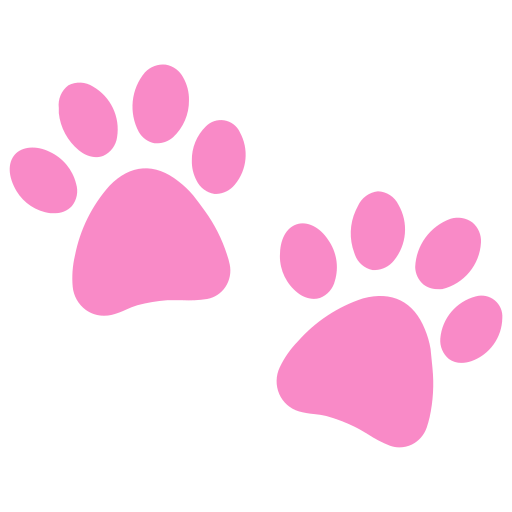
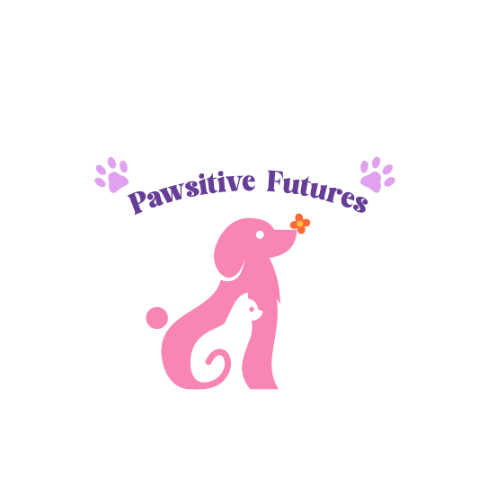
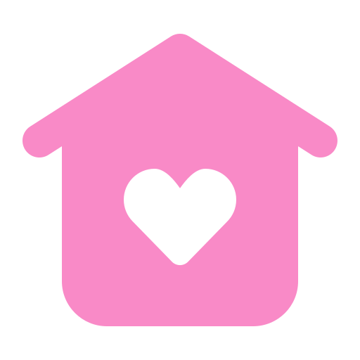
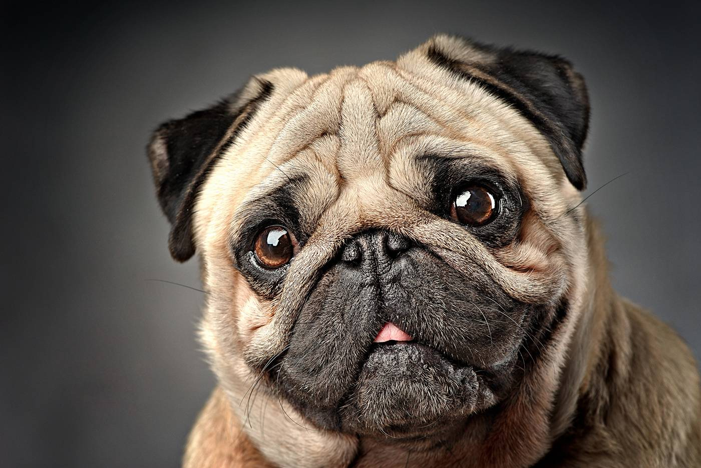
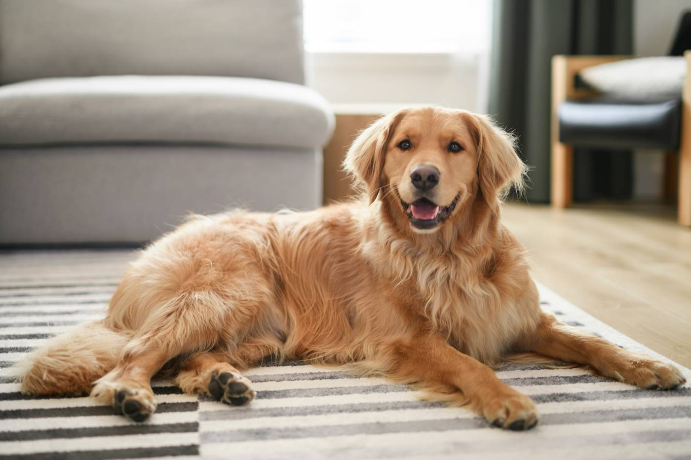
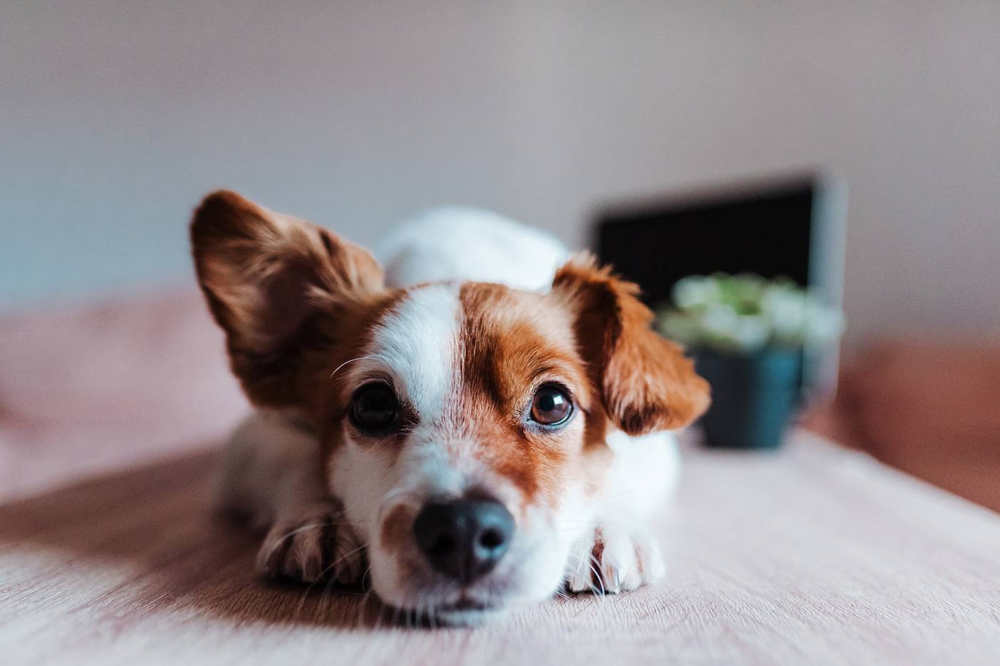
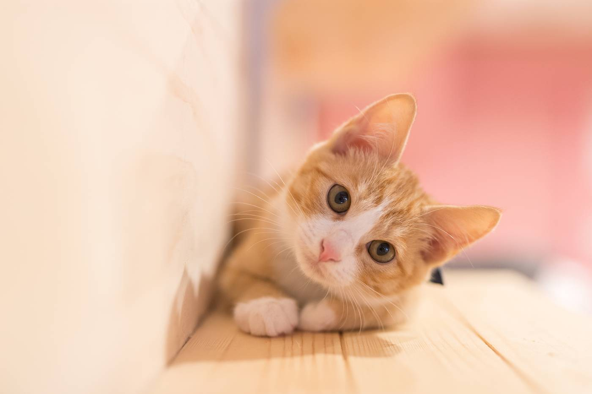
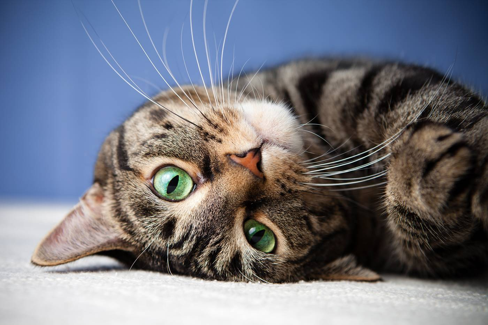
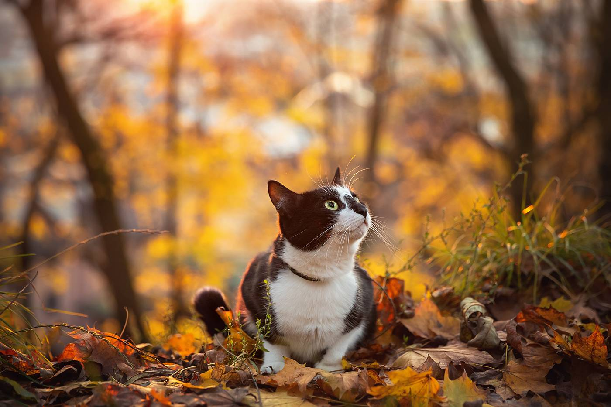

1: Find your Perfect Match
Browse our available cats and dogs to learn about their personalities, needs, and the type of home they would thrive in.


Browse our available cats and dogs to learn about their personalities, needs, and the type of home they would thrive in.
Submit an adoption application and schedule a meet-and-greet so you can spend time with the pet and make sure it’s a great fit for both of you.

Once your adoption is approved, complete the final paperwork and welcome your new companion into their forever home.

Breed: Pug
Age: 2
Daisy is full of energy and personality! She loves outdoor adventures, sniffing around the yard, and meeting new people. Daisy would do great with an active family that enjoys walks, playtime, and lots of fun. She’ll reward you with endless love and tail wags.
Learn More
Breed: Golden Retriever
Age: 2
Milo is a playful and affectionate pup who loves making new friends. Whether he’s chasing a ball in the yard or curling up beside you after a long day, Milo is happiest when he’s around people. He’s great with families and would thrive in a home where he can get plenty of exercise and attention.
Learn More
Breed: Mixed
Age: 3
Charlie is a friendly and energetic dog who loves to play and explore. He enjoys long walks, playing fetch, and spending time with people. Charlie is very loyal and quickly forms strong bonds with his family. With his playful personality and loving nature, he would thrive in an active home where he can get plenty of exercise and attention.
Learn More
Breed: Domestic Shorthair
Age: 1
Scratches is a gentle and affectionate cat with a soft coat and an even softer heart. He enjoys relaxing in sunny spots and spending quiet time with his favorite humans. Scratches would be happiest in a calm home where he can feel safe, loved, and spoiled with plenty of chin scratches.
Learn More
Breed: Domestic Shorthair
Age: 2
Luna is a curious and playful kitty who loves exploring new spaces and chasing toys. She has a sweet personality and enjoys cuddling once she gets comfortable. Luna would do well in a home that can give her attention, playtime, and a cozy spot by the window to watch the world go by.
Learn More
Breed: Domestic Shorthair
Age: 3
Sunshine is a sweet and curious cat who loves exploring and finding cozy places to nap. He enjoys gentle playtime with toys and will happily curl up beside you once he’s comfortable.
Learn MoreOur adoption fee is $125, which helps cover the essential care each pet receives before going to their new home. This includes veterinary check-ups, vaccinations, and basic health care to ensure every animal is healthy and ready for adoption.
For adopters, this fee means your new pet has already received important medical attention and care, giving you peace of mind as you welcome them into your home. Your adoption fee also helps support Pawsitive Futures, allowing us to continue rescuing, caring for, and rehoming animals in need.